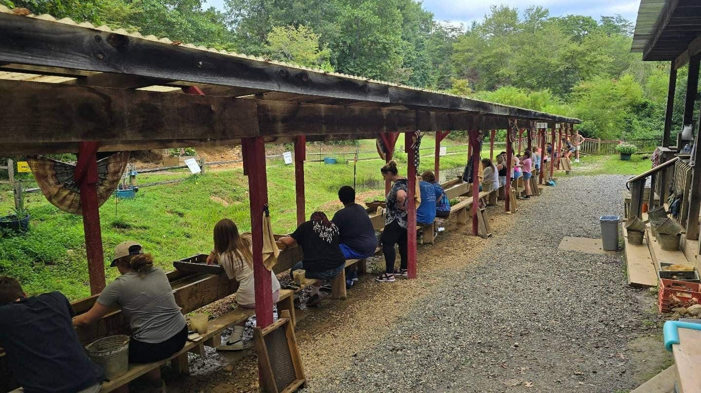

Discover the traditional methods of extracting the world's most premium sapphires, rubies, and precious stones in the "City of Gems."
Ratnapura, meaning "City of Gems" in Sanskrit, has been renowned for its precious stones for over 2,000 years. The traditional gem mining process in the region remains an incredible spectacle of human endurance and historic technique, where miners descend into deep clay shafts using only handheld tools and ancient knowledge.
Visiting a working gem mine provides a firsthand look at how the island's legendary sapphires and rubies are brought to the surface. Observe the rhythmic washing of the "illama" (gem-bearing gravel) and learn about the entire journey of a gemstone, from its discovery in the wet-zone mud to its final glittering state in the city's famous gem markets.
Back to Ratnapura Hub